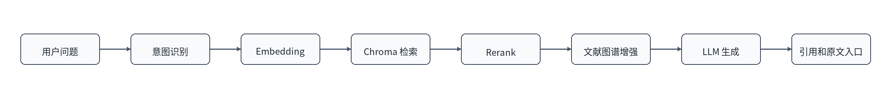
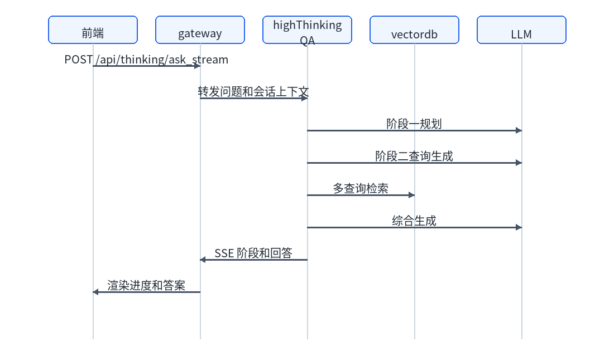
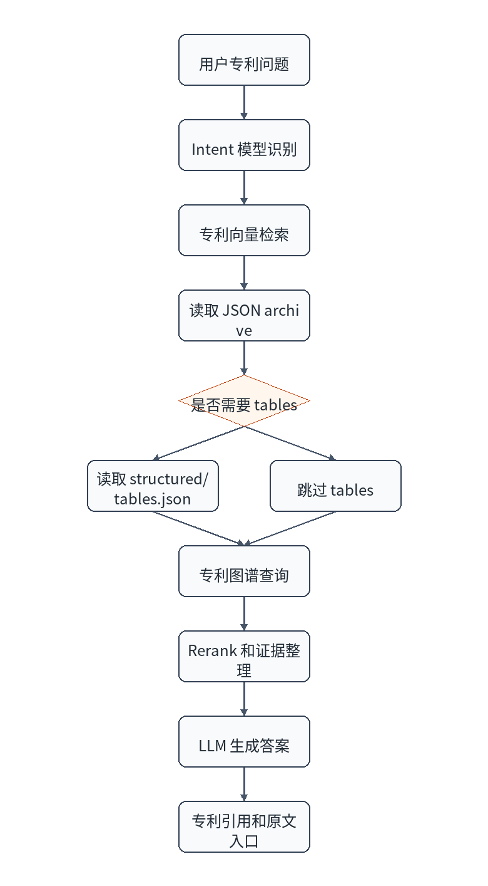
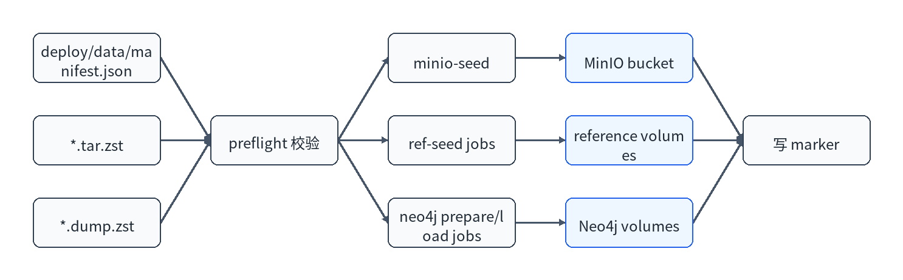

版本记录
| 版本 | 日期 | 修订人 | 修订说明 |
|---|
| V1.0 | 2026/05/20 | 项目组 | 初版 |
1 功能模块划分
| 一级模块 | 子功能 | 说明 |
|---|
| 账号认证 | 登录、注册、找回密码、修改密码、安全问题、个人中心。 | 面向所有用户。 |
| 问答工作台 | 会话管理、文献问答、深度问答、专利问答、文件问答、阶段展示。 | 核心业务入口。 |
| 文件与原文 | 上传、列表、下载、删除、论文原文、专利原文、专利 tables。 | 支撑知识核对。 |
| 管理后台 | 用户管理、部门管理、人员管理、配额管理。 | 管理员使用。 |
| 部署数据 | MinIO seed、reference seed、Neo4j seed。 | 部署初始化。 |
2 账号认证模块设计
2.1 功能描述
账号认证模块负责用户登录、注册、首次登录安全设置、密码修改、安全问题设置和找回密码。普通用户注册必须匹配有效人员记录；管理员账号由 MySQL 初始化脚本创建。
2.2 前端页面
| 页面 | 路径 | 交互细节 |
|---|
| 登录页 | /login | 输入用户名和密码，登录成功后按角色跳转。 |
| 注册页 | /register | 输入用户名、密码、姓名、工号、校验码。 |
| 找回密码 | /forgot-password | 通过安全问题验证后重置密码。 |
| 个人中心 | /profile | 修改用户名、密码、安全问题和人员绑定。 |
2.3 库表设计
| 表名 | 字段 | 类型 | 备注 |
|---|
users | id | bigint | 主键。 |
users | username | varchar(64) | 唯一用户名。 |
users | password_hash | varchar(255) | 密码哈希。 |
users | role | enum | user 或 admin。 |
users | status | enum | active 或 disabled。 |
user_security_questions | question、answer_hash | varchar | 找回密码使用。 |
password_history | password_hash | varchar(255) | 密码历史。 |
2.4 接口说明
| 接口 | 方法 | 输入 | 输出 | 错误码 |
|---|
/api/auth/login | POST | 用户名、密码。 | token、用户信息、首次登录标志。 | 账号不存在、密码错误、账号停用。 |
/api/auth/register | POST | 用户名、密码、姓名、工号、校验码。 | 注册成功用户信息。 | 人员不匹配、用户名重复。 |
/api/auth/password | PUT/POST | 旧密码、新密码。 | 修改结果。 | 旧密码错误、复杂度不足。 |
/api/auth/forgot-password/initiate | POST | 用户名。 | 安全问题列表。 | 未设置安全问题。 |
/api/auth/forgot-password/verify | POST | 用户名、安全问题答案、新密码。 | 重置结果。 | 答案错误。 |
3 问答工作台模块设计
3.1 功能描述
问答工作台负责会话创建、模式选择、问题发送、SSE 事件渲染、引用展示、文件选择和原文查看入口。前端用户可选择“文献”“深度”“专利”三种模式。
3.2 处理流程
3.3 接口说明
| 接口 | 方法 | 说明 | 输出 |
|---|
/api/fast/ask_stream | POST | 文献流式问答。 | SSE 事件。 |
/api/thinking/ask_stream | POST | 深度流式问答。 | SSE 事件。 |
/api/patent/ask_stream | POST | 专利流式问答。 | SSE 事件。 |
/api/v1/tasks | POST | 创建可恢复任务。 | task_id。 |
/api/v1/tasks/{task_id}/events | GET | 读取任务事件。 | SSE 事件。 |
3.4 输入输出规范
输入至少包含问题文本和模式。输出事件包括阶段开始、阶段结束、文本增量、引用、错误和完成。错误事件应包含用户可理解提示，不应泄漏内部密钥或堆栈。
4 文件和原文模块设计
4.1 功能描述
文件模块支持上传 PDF、Excel、CSV，并将文件元数据绑定到会话。原文模块负责从 MinIO 读取论文 PDF、专利 PDF、专利图片和 structured tables。
4.2 库表设计
| 表名 | 字段 | 类型 | 备注 |
|---|
conversation_files | id | bigint | 主键。 |
conversation_files | conversation_id、user_id | bigint | 所属会话和用户。 |
conversation_files | file_type | enum | PDF 或 Excel；CSV 可按表格文件处理。 |
conversation_files | storage_ref | varchar(1024) | MinIO 对象引用。 |
4.3 异常处理
| 异常 | 用户提示 | 后端处理 |
|---|
| 文件为空 | 请选择有效文件。 | 返回 400。 |
| 格式不支持 | 仅支持 PDF、Excel、CSV。 | 校验 content type 和扩展名。 |
| 对象不存在 | 原文暂不可用。 | 记录 MinIO key 和请求 ID。 |
| 文件过大 | 文件超过限制。 | 由前端和 nginx 限制。 |
5 管理后台模块设计
5.1 用户管理
管理员可查询用户、创建用户、修改用户名、重置密码、停用启用、修改用户类型、绑定或解绑人员记录。删除用户属于高风险操作，应在前端二次确认。
5.2 部门管理
部门按一级、二级、三级维护。当前 seed 包含电池材料技术研究中心、正极材料研究所、装备工程化研究所、材料应用研究所及三级部门。停用部门不删除历史绑定关系。
5.3 人员管理
人员记录包含工号、姓名、校验码哈希、状态和部门。注册和个人中心绑定必须匹配人员记录。
5.4 配额管理
配额类型包含 ask_query、file_qa、file_view、doc_assist。系统支持默认配额、周期窗口、用户例外和重置。
6 非功能设计
| 模块 | 性能指标 | 安全措施 | 可靠性措施 |
|---|
| 认证 | 登录接口应快速响应。 | 密码哈希、JWT、账号状态。 | 失败提示明确，避免泄漏。 |
| 问答 | 记录首 token 和总耗时。 | token 校验、配额控制。 | SSE 错误事件和超时处理。 |
| 文件 | 上传大小受限。 | 文件类型校验、对象权限。 | 元数据和对象引用分离。 |
| 管理 | 列表分页。 | 管理员权限。 | 停用优先于物理删除。 |
7 技术实现规范
| 类别 | 规范 |
|---|
| Python | 4 空格缩进，函数和模块 snake_case，类 PascalCase。 |
| Vue/JS | 保留现有组件结构，避免将业务逻辑堆在单一组件。 |
| 接口 | 新增对外接口优先经 gateway 暴露，响应结构保持一致。 |
| 配置 | 新增配置项需同步 shared env、secret env、compose、模板和文档。 |
| 版本控制 | 提交信息使用 feat:、fix:、docs: 等前缀。 |
8 测试设计
| 测试类型 | 覆盖范围 |
|---|
| 单元测试 | 配置加载、路由决策、配额服务、数据包校验、核心工具函数。 |
| 集成测试 | 认证接口、管理员接口、问答代理、任务恢复、MinIO 原文代理。 |
| 前端结构测试 | 路由、关键组件、配额卡片、管理面板。 |
| 部署测试 | preflight、seed job、compose healthcheck。 |
缺陷等级分为 Blocker、Critical、Major、Minor。Blocker 和 Critical 必须在发布前关闭；Major 需评估是否影响验收；Minor 可记录为遗留优化。
9 文献问答模块设计
9.1 功能描述
文献问答模块由 fastQA 后端提供，面向论文知识库进行查询理解、向量检索、候选重排、图谱增强、答案生成和引用整理。该模块依赖 fastqa_ref_data 中的 Chroma 向量库和 MinIO 中的论文原文。
9.2 前端页面
用户在问答首页选择“文献”模式后输入问题。页面展示阶段进度、耗时、答案、引用和论文原文入口。阶段事件可包含 intent、检索、rerank、生成等步骤。
9.3 库表设计
| 对象 | 字段或路径 | 说明 |
|---|
| 会话消息 | conversation_messages | 保存用户问题、助手回答和任务状态。 |
| 文件关联 | conversation_files | 保存本轮可用文件上下文。 |
| 向量库 | fastqa_ref_data | 包含主文献向量库和 MD 向量库。 |
| 原文对象 | papers/ | MinIO 中的论文 PDF 权威副本。 |
9.4 重点逻辑
resolve_intent(question)
build_embedding(question)
retrieve_candidates(vectordb, top_k)
rerank_candidates(question, candidates)
optional_graph_context(question)
generate_answer(question, evidence)
return citations and original links
9.5 处理流程
图 3 文献问答处理流程

9.6 接口说明
| 接口 | 方法 | 输入 | 输出 |
|---|
/api/fast/ask、/api/v1/fast/ask | POST | 问题、会话、文件选择。 | 同步回答。 |
/api/fast/ask_stream、/api/v1/fast/ask_stream | POST | 问题、会话、文件选择。 | SSE 阶段和答案。 |
/api/view_pdf/{doi} | GET/HEAD | DOI 或原文标识。 | PDF 响应。 |
/api/reference_preview | GET/POST | 引用标识。 | 引用预览信息。 |
9.7 异常处理设计
| 异常 | 处理 | 用户提示 |
|---|
| 向量库未加载 | 记录路径和 collection 信息。 | 知识库暂不可用，请联系管理员。 |
| rerank 服务失败 | 按配置降级为原检索排序或返回错误。 | 检索重排异常，请稍后重试。 |
| 论文原文缺失 | 记录 MinIO key。 | 原文暂不可用。 |
10 深度问答模块设计
10.1 功能描述
深度问答模块由 highThinkingQA 提供，适合复杂问题的分解、规划、检索、子问题回答和综合生成。该模块依赖独立 highthinking_ref_data 向量库，并通过 LLM 完成多阶段推理。
10.2 前端页面
用户选择“深度”模式后提交问题。页面应允许长时间流式输出，展示规划、检索、综合等阶段，避免用户误判为卡死。
10.3 重点逻辑
stage1_plan(question)
stage2_generate_queries(plan)
retrieve_context(queries)
synthesize_answer(question, plan, context)
stream_steps_and_final_answer()
10.4 处理流程
图 4 深度问答处理流程

10.5 接口说明
| 接口 | 方法 | 说明 |
|---|
/api/thinking/ask、/api/v1/thinking/ask | POST | 深度同步问答。 |
/api/thinking/ask_stream、/api/v1/thinking/ask_stream | POST | 深度流式问答。 |
/api/ingest、/api/v1/ingest | POST/GET | 保留的摄取任务接口，生产主要使用离线数据包。 |
10.6 异常处理设计
| 异常 | 处理 | 用户提示 |
|---|
| LLM 超时 | 终止当前阶段并返回错误事件。 | 模型响应超时，请缩小问题范围或稍后重试。 |
| 检索结果为空 | 允许模型基于已有上下文说明不足。 | 未检索到足够依据。 |
| SSE 断开 | gateway 记录 task id，任务接口可查询事件。 | 连接中断，请刷新查看结果。 |
11 专利问答模块设计
11.1 功能描述
专利问答模块由 patentQA 提供，负责专利意图识别、专利向量检索、JSON archive 读取、structured tables 读取、专利图谱增强、答案生成和专利原文引用。
11.2 库表和数据设计
| 对象 | 路径或表 | 说明 |
|---|
| 专利 JSON archive | patentqa_ref_data | 14006 个专利 JSON 目录，不含 PDF/PNG。 |
| 专利向量库 | patentqa_ref_data | 两个 Chroma 向量库。 |
| 专利原文 | patent/originals/{id}/ | MinIO 中的 PDF、图片、manifest 和 structured tables。 |
| 专利图谱 | neo4j-patent | 专利知识图谱。 |
11.3 处理流程
图 5 专利问答处理流程

11.4 接口说明
| 接口 | 方法 | 输入 | 输出 |
|---|
/api/patent/ask、/api/v1/patent/ask | POST | 专利问题、会话。 | 同步回答。 |
/api/patent/ask_stream、/api/v1/patent/ask_stream | POST | 专利问题、会话。 | SSE 阶段和回答。 |
/api/patent/original/{canonical_patent_id} | GET/HEAD | 规范化专利 ID。 | 专利原文或对象响应。 |
11.5 异常处理设计
| 异常 | 处理 | 用户提示 |
|---|
| intent 模型不可用 | 按默认专利检索策略降级或返回明确错误。 | 意图识别异常，已尝试按默认策略处理。 |
| tables 不存在 | manifest 中 availability.tables 为 false 时正常跳过。 | 该专利暂无结构化表格。 |
| 图谱不可用 | 记录 Neo4j 错误，降级为向量检索回答。 | 图谱增强暂不可用。 |
12 数据导入模块设计
12.1 功能描述
数据导入模块由 compose 中的 one-shot seed job 实现，负责 MinIO 原文、reference data 和 Neo4j dump 的自动导入。每个 seed job 写入 marker，避免同版本重复导入；设置 DATA_SEED_FORCE=1 时可强制重导。
12.2 数据流程图
图 6 数据导入数据流程

12.3 异常处理设计
| 异常 | 处理 | 恢复方式 |
|---|
| sha256 不一致 | preflight 失败。 | 重新传输数据包。 |
| 同版本 marker 存在 | seed job 跳过。 | 确认无需重导；如需重导设置 DATA_SEED_FORCE=1。 |
| Neo4j dump 加载失败 | seed job 退出非 0。 | 检查 dump 版本和 Neo4j 镜像版本。 |
| MinIO bucket 不存在 | minio-seed 失败。 | 检查 minio-init 和 MinIO 密码。 |
13 接口总表
13.1 Gateway 对外接口
| 接口分组 | 路径 | 方法 | 说明 |
|---|
| 认证 | /api/auth/login、/api/v1/auth/login | POST | 登录。 |
| 认证 | /api/auth/register、/api/v1/auth/register | POST | 注册。 |
| 认证 | /api/auth/me、/api/v1/auth/me | GET | 当前用户。 |
| 认证 | /api/auth/departments/tree、/api/v1/auth/departments/tree | GET | 注册和个人中心使用的部门树。 |
| 认证 | /api/auth/department、/api/auth/username、/api/auth/personnel-binding、/api/auth/password | PUT/POST | 个人资料、用户名、人员绑定和密码维护。 |
| 认证 | /api/auth/forgot-password/initiate、/api/auth/forgot-password/verify、/api/auth/security-questions | GET/POST/PUT | 找回密码和安全问题。 |
| 会话 | /api/conversations、/api/v1/conversations | GET/POST | 查询和创建会话。 |
| 会话 | /api/conversations/{conversation_id} | GET/DELETE | 获取或删除会话。 |
| 会话 | /api/conversations/{conversation_id}/title | PUT | 修改会话标题。 |
| 会话 | /api/conversations/{conversation_id}/messages | POST | 写入会话消息。 |
| 文件 | /api/conversations/{conversation_id}/files | GET | 会话文件列表。 |
| 文件 | /api/conversations/{conversation_id}/files/{file_id} | GET/DELETE | 文件详情和删除。 |
| 文件 | /api/conversations/{conversation_id}/files/{file_id}/download | GET | 文件下载。 |
| 上传 | /api/upload_pdf、/api/upload_excel | POST | 上传 PDF、Excel 或 CSV。 |
| 文档辅助 | /api/translate、/api/translate_document、/api/summarize_pdf/{doi} | POST | 翻译和摘要。 |
| 原文 | /api/view_pdf/{doi}、/api/patent/original/{canonical_patent_id} | GET/HEAD | 论文和专利原文。 |
| 原文 | /api/check_pdf/{doi}、/api/extract_pdf_text/{doi}、/api/literature_content、/api/reference_preview | GET/POST | 原文检查、文本提取、文献内容和引用预览。 |
| 系统 | /api/health、/api/kb_info、/api/background_status、/api/refresh_kb、/api/clear_cache | GET/POST | 健康、知识库和缓存接口。 |
| 问答 | /api/{fast|thinking|patent}/ask、/api/v1/{fast|thinking|patent}/ask | POST | 同步问答。 |
| 问答 | /api/{fast|thinking|patent}/ask_stream、/api/v1/{fast|thinking|patent}/ask_stream | POST | 流式问答。 |
| 任务 | /api/v1/tasks、/api/v1/tasks/{task_id}、/api/v1/tasks/{task_id}/events、/api/v1/tasks/{task_id}/cancel | GET/POST | 可恢复任务和事件。 |
| 准入 | /api/admission/status、/api/admission/requests/{request_id}、/api/admission/requests/{request_id}/cancel、/api/admission/requests/{request_id}/frames | GET/POST | 请求准入状态、取消和帧信息。 |
| 健康 | /healthz | GET | gateway 健康检查。 |
13.2 管理后台接口
| 分组 | 路径 | 方法 | 说明 |
|---|
| 用户 | /api/admin/users、/api/admin/users/{user_id} | GET/POST/DELETE | 用户列表、新增和删除。 |
| 用户 | /api/admin/users/{user_id}/username、/api/admin/users/{user_id}/password、/api/admin/users/{user_id}/status、/api/admin/users/{user_id}/type | GET/PUT | 用户名、密码、状态和类型维护。 |
| 用户 | /api/admin/users/{user_id}/personnel-binding | PUT/DELETE | 人员绑定和解绑。 |
| 用户 | /api/admin/users/batch-delete、/api/admin/users/batch-type、/api/admin/users/batch-import、/api/admin/users/import-template | GET/POST | 批量和模板。 |
| 人员 | /api/admin/personnel、/api/admin/personnel/{personnel_id}、/api/admin/personnel/{personnel_id}/status、/api/admin/personnel/{personnel_id}/bindings | GET/POST/PUT | 人员增删改查、状态和绑定关系。 |
| 人员 | /api/admin/personnel/batch-import、/api/admin/personnel/import-template | GET/POST | 人员批量导入和模板下载。 |
| 部门 | /api/admin/departments/tree | GET | 部门树。 |
| 部门 | /api/admin/departments/primary、/api/admin/departments/primary/{primary_id}、/api/admin/departments/primary/{primary_id}/status | POST/PUT | 一级部门维护。 |
| 部门 | /api/admin/departments/secondary、/api/admin/departments/secondary/{secondary_id}、/api/admin/departments/secondary/{secondary_id}/status、/api/admin/departments/secondary/{secondary_id}/users、/api/admin/departments/secondary/{secondary_id}/legacy-users | GET/POST/PUT | 二级部门和用户关联。 |
| 部门 | /api/admin/departments/tertiary、/api/admin/departments/tertiary/{tertiary_id}、/api/admin/departments/tertiary/{tertiary_id}/status、/api/admin/departments/tertiary/{tertiary_id}/users | GET/POST/PUT | 三级部门和用户关联。 |
| 部门 | /api/admin/departments/batch-import、/api/admin/departments/import-template | GET/POST | 部门批量导入和模板下载。 |
| 配额 | /api/quota/my、/api/quota/configs、/api/quota/configs/{quota_type}、/api/quota/users/{user_id}、/api/quota/reset/{user_id}/{quota_type} | GET/POST/PUT | 个人配额、配置、用户用量和重置。 |
13.3 内部和兼容接口
| 接口 | 方法 | 提供方 | 说明 |
|---|
/internal/quota/grants/precheck | POST | public-service | gateway 调用的配额预占。 |
/internal/quota/grants/{grant_id}/finalize | POST | public-service | gateway 调用的配额结算。 |
/internal/conversations/{conversation_id}/messages/user | POST | public-service | 写用户消息。 |
/internal/conversations/{conversation_id}/context-snapshot | GET | public-service | 读取会话上下文快照。 |
/internal/conversations/{conversation_id}/messages/assistant-async | POST | public-service | 异步写助手消息。 |
/internal/conversations/{conversation_id}/messages/assistant-terminal-async | POST | public-service | 异步写终态助手消息。 |
/internal/conversations/{conversation_id}/tasks/{task_id}/assistant-start | POST | public-service | 任务助手消息开始。 |
/internal/conversations/{conversation_id}/tasks/{task_id}/create-turn | POST | public-service | 创建任务轮次。 |
/internal/conversations/{conversation_id}/tasks/{task_id}/assistant-progress | POST | public-service | 写任务进度。 |
/internal/conversations/{conversation_id}/tasks/{task_id}/assistant-terminal | POST | public-service | 写任务终态。 |
/internal/conversations/{conversation_id}/tasks/{task_id}/rollback-create | POST | public-service | 任务创建失败回滚。 |
/api/ask、/api/v1/ask、/api/{mode}/ask | POST | 各 QA 后端 | 后端直连或兼容入口，生产优先经 gateway。 |
/api/ask_stream、/api/v1/ask_stream、/api/{mode}/ask_stream | POST | 各 QA 后端 | 后端直连或兼容流式入口，生产优先经 gateway。 |
/api/health、/api/v1/health、/healthz | GET | 各后端 | 健康检查。 |